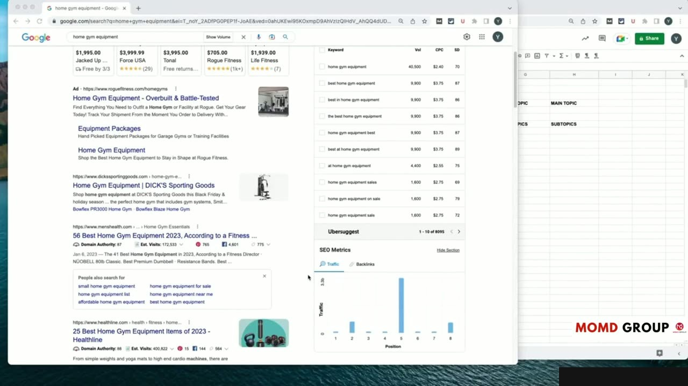
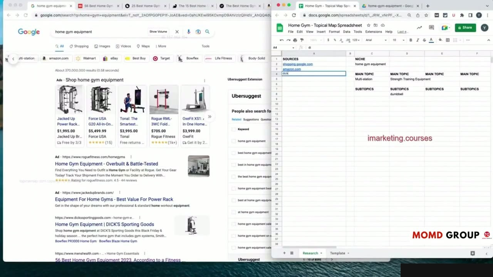
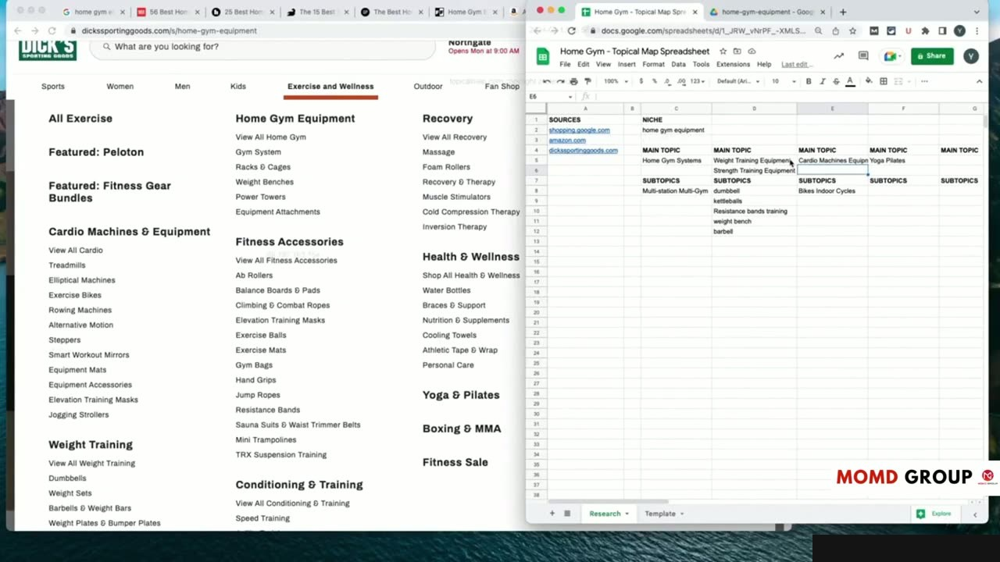
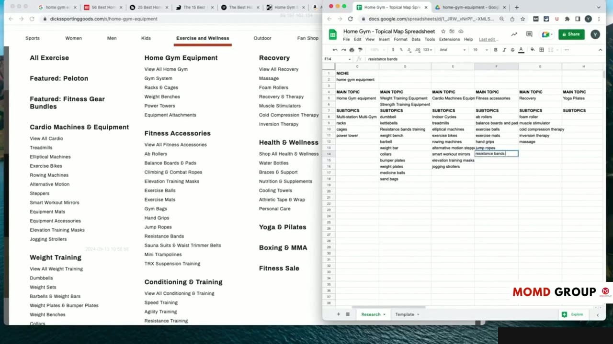

Practical Case Study: Step-by-Step Topical Map Creation (Part 1)
Bắt đầu Case Study: Lựa chọn Ngách và Phân tích Bối cảnh
Trong video thực hành kéo dài hơn 22 phút này, Yoyao trực tiếp thao tác trên màn hình máy tính từ đầu đến cuối để xây dựng một Topical Map thực tế hoàn chỉnh.
Dự án thực chiến bắt đầu bằng việc khảo sát một ngách thị trường cụ thể. Yoyao phân tích:
- Quy mô thị trường và tiềm năng thương mại của các nhóm sản phẩm dịch vụ trong ngách.
- Đánh giá sức mạnh của các đối thủ dẫn đầu hiện tại trên bảng xếp hạng Google.
- Xác định phạm vi biên giới chủ đề (Topic Boundaries) để biết rõ website nên viết về cái gì và tuyệt đối không nên mở rộng sang cái gì nhằm tránh làm loãng thẩm quyền chuyên môn.
Đây là buổi thực hành sống động giúp học viên hiểu rõ từng cú nhấp chuột và quyết định chiến lược trong điều kiện thực tế.

Khai thác Từ khóa Hạt giống (Seed Keywords) và Phân rã Chủ đề Lớn
Yoyao sử dụng các công cụ nghiên cứu để nhập các từ khóa hạt giống ban đầu và bắt đầu bóc tách các tầng ý nghĩa:
Từ một khái niệm cốt lõi, ông phân chia thành các mảng lớn tương ứng với các giai đoạn của hành trình khách hàng. Mỗi mảng lớn được đặt tên rõ ràng và gán vai trò chiến lược cụ thể.
Quy trình phân rã trực quan này giúp người học nhìn thấy cách biến một ý tưởng kinh doanh trừu tượng thành một bộ khung kiến trúc nội dung rõ ràng, mạch lạc.

Trích xuất và So sánh Sitemap của Top 3 Đối thủ Cạnh tranh
Tiếp theo, Yoyao tiến hành tải sitemap XML của 3 đối thủ mạnh nhất trong ngách về máy tính và đưa vào công cụ phân tích:
- Lọc bỏ các trang hệ thống, chính sách, giỏ hàng để chỉ giữ lại các URL bài viết blog và danh mục sản phẩm.
- Phân loại cấu trúc URL của đối thủ để xem họ đang tổ chức Silo như thế nào và đâu là những bài viết mang lại nhiều lưu lượng truy cập nhất cho họ.
- Phát hiện các khoảng trống nội dung (Content Gaps) mà cả 3 đối thủ đều chưa khai thác sâu để biến đó thành lợi thế cạnh tranh áp đảo cho website của mình.
Phương pháp đảo ngược kỹ thuật (Reverse Engineering) sitemap này giúp rút ngắn hàng tháng trời tự mò mẫm nội dung.

Xử lý Dữ liệu thô và Chuẩn hóa Danh sách Từ khóa
Kết thúc phần 1 của Case Study, Yoyao hướng dẫn cách làm sạch dữ liệu trong Google Sheets:
Hàng ngàn từ khóa thô tải về từ nhiều nguồn được gộp lại, loại bỏ trùng lặp (Deduplication), chuẩn hóa viết hoa viết thường và phân loại sơ bộ theo độ khó (Keyword Difficulty) cùng dung lượng tìm kiếm.
Một bộ dữ liệu sạch là điều kiện tiên quyết để việc gom cụm ngữ nghĩa ở các bước tiếp theo diễn ra chính xác và nhanh chóng.

Nguồn và đối chiếu
- Topical Maps Unlocked 2.0 · 11-From Theory to Practice Module/video 01.mp4 (Video bài học chính).
- Bản tiếng Anh không có video riêng cho bài học này; nội dung đối chiếu trực tiếp từ slide và video chính.